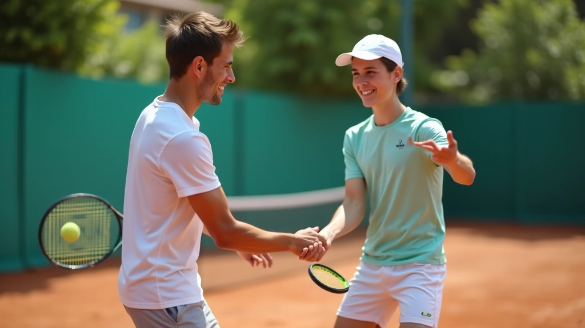
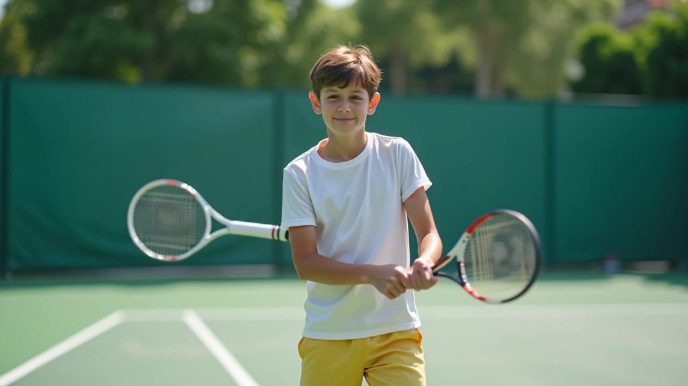
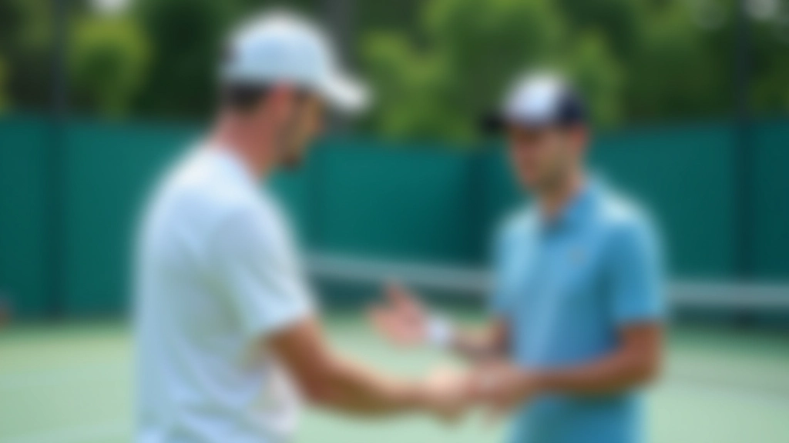

إتقن الضربة الخلفية باليدين
تدريب متقدم لتطوير مهاراتك في التنس من الأساسيات إلى المستويات العليا
تعليم أساسي شامل
نتعلم معك من البداية — القبضة الصحيحة، الموضع، حركة القدمين. كل شيء موضح بوضوح وسهل الفهم. لن تشعر بالارتباك أبداً.
تمارين تطوير القوة
تمارين عملية مصممة لزيادة قوة الضربة وسرعتها. نركز على التقنية الصحيحة أولاً، ثم نبني القوة تدريجياً بطريقة آمنة وفعالة.
تقييم وتطور مستمر
نتابع تطورك في كل جلسة. تمارين موجهة تركز على نقاط ضعفك. بعد أسابيع قليلة ستلاحظ الفرق بنفسك.
تقنيات متقدمة وتأثيرات
بعد إتقان الأساسيات، ننتقل للدورانات والتأثيرات. كيفية إضافة الـ Topspin، الـ Slice، والضربات الموجهة. كل تقنية بخطوات صغيرة وسهلة.

برنامج شامل متكامل
كل ما تحتاجه في مكان واحد — من الأساسيات إلى الاحترافية
شرح بالفيديو
شروحات مرئية واضحة لكل حركة وتقنية
مجموعات تدريب
تدريب في مجموعات صغيرة مع متابعة شخصية
نتائج حقيقية
تحسن ملموس في الأداء خلال أسابيع معدودة
المشاكل والحلول
نعالج كل المشاكل الشائعة بحلول عملية وفعالة
المشاكل الشائعة
الحلول التي نقدمها
مقالات وأدلة مفيدة
اقرأ أحدث النصائح والتقنيات من خبرائنا

أساسيات الضربة الخلفية باليدين للمبتدئين
تعلم الخطوات الأساسية والموضع الصحيح والقبضة المناسبة لتنفيذ الضربة الخلفية باليدين بشكل صحيح.
اقرأ المزيدتحسين القوة والسرعة
اكتشف التمارين والتدريبات التي تساعدك على زيادة قوة وسرعة ضربتك الخلفية بشكل ملحوظ.
اقرأالأخطاء الشائعة وتصحيحها
تعرف على الأخطاء الأكثر شيوعاً في الضربة الخلفية وطرق عملية لتصحيحها بسهولة.
اقرأالتقنيات المتقدمة والدورانات
تقنيات احترافية لإضافة الدوران والتأثيرات المتقدمة إلى ضربتك الخلفية.
اقرأهل أنت مستعد لتطوير مهاراتك؟
تواصل معنا الآن للبدء في رحلتك نحو إتقان الضربة الخلفية باليدين. فريقنا جاهز لمساعدتك في كل خطوة.
تواصل معنامن التدريبات
لقطات من جلسات التدريب والتطور
ضربة خلفية عميقة

تدريب جماعي

تدريب فردي
معدات احترافية
مجالات تدريبنا
نغطي جميع جوانب تطوير الضربة الخلفية باليدين
الأساسيات
القوة والسرعة
الدوران والتأثيرات
التحكم والدقة
الوقاية من الإصابات
التحضير للمسابقات
معايير جودتنا
نلتزم بمعايير عالية في كل جلسة تدريب
انضم إلى لاعبي التنس الذين طوروا مهاراتهم معنا
ابدأ رحلتك الآننستخدم ملفات تعريف الارتباط لتحسين تجربتك على الموقع. باستخدامك للموقع، فإنك توافق على استخدام الملفات.